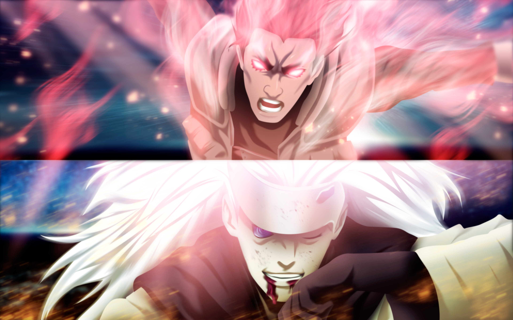
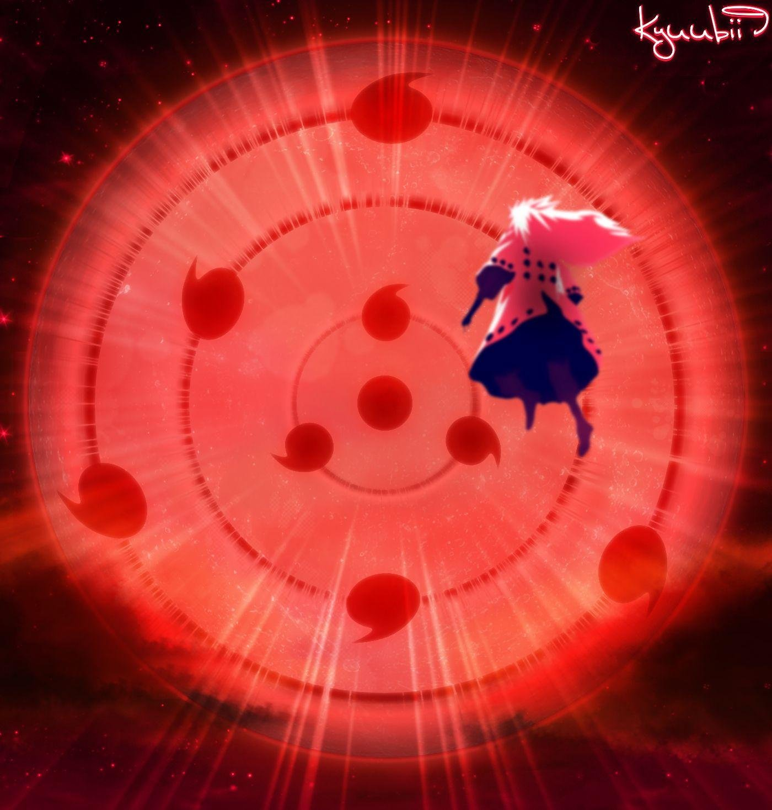

1/10


Com quantos anos Madara morreu pela primeira vez ?
Questão 1
Qual o nome da "Arma" utilizada por Madara ?
Questão 2
O que zetsu negro é do madara ?
Questão 3
Qual era o passatempo do Madara
Questão 4
Qual desses personagens venceria o auge do Madara?
Questão 5
O que/Quem matou Madara no final de Naruto shippuden ?
Questão 6
Qual era a frase favorita do Madara ?
Questão 7

Qual era a comida favorito do Madara ?
Questão 8

De quem era o Rinnegan que o Madara usava ?
Questão 9
Por que o Susano do Madara tem 4 braços em vez de asas ?
questão 10
Resultado:
Voce ficou com: